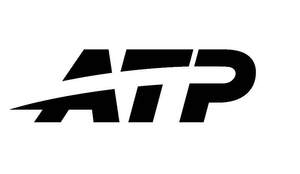

Trade Mark Journal No.2026/010 6 March 2026
UK00004318259 2 January 2026 (14,16,25,28,35,41,42,45)

International priority date claimed: 30 September 2025
(United States of America)
(99420381)
- Class 14
- Jewelry.
- Class 16
- Publications, namely, magazines in the field of tennis; association directories; guide, rules, and reference books for tennis, and tennis player and tennis tournament printed media guides; posters; printed tickets; tennis event programs; paper statistical books.
- Class 25
- Clothing, namely, shirts, sweatshirts, tennis wear, sweaters, pants, shorts, hats, visors.
- Class 28
- Tennis rackets; tennis racket strings; hand grips for tennis rackets; fitted protective covers specially adapted for sports equipment, namely, tennis rackets; tennis balls.
- Class 35
- Association services, namely, promoting the interests of tennis professionals, the sport of tennis, tennis tournaments, and recreational tennis facilities; on-line retail store services featuring general consumer merchandise related to sports and tennis players.
- Class 41
- Entertainment in the nature of tennis tournaments and tennis-related events; providing information on the sport of tennis via the Internet; providing on-line tennis newsletters; providing a tennis academy with tennis instruction, training, and player development.
- Class 42
- Providing online web sites containing tennis information of interest to professional tennis players, tennis tournament directors, tennis media, tennis coaches, other tennis personnel, and tennis fans and spectators; mathematical sports rating services, namely, calculating the relative ability and performance of tennis players.
- Class 45
- Promulgating, maintaining, and enforcing rules and standards for facilities regarding their use for tennis tournaments and tennis-related events; sanction, certification, coordination, scheduling, and approval of tennis tournaments; setting standards and rules for tennis tournaments.
ATP Tour, Inc.
Representative: Finnegan Europe LLP